-Закон, утверждающий, что сумма импульсов всех тел системы есть величина постоянная, если векторная сумма внешних сил, действующих на систему тел, равна нулю[1]. Простыми словами:Векторная сумма импульсов двух тел до взаимодействия равна векторной сумме их импульсов после взаимодействия
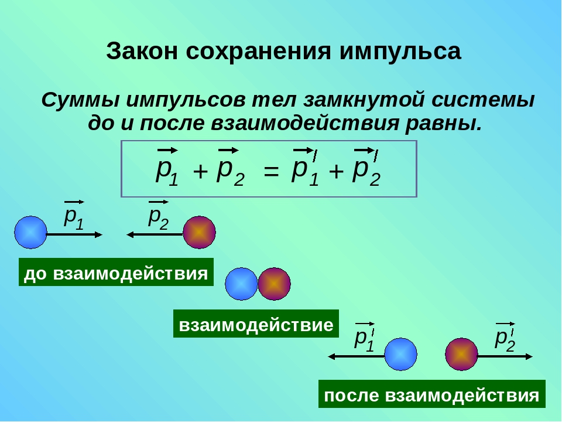В замкнутой системе тел полная энергия не изменяется при любых взаимодействиях внутри этой системы тел
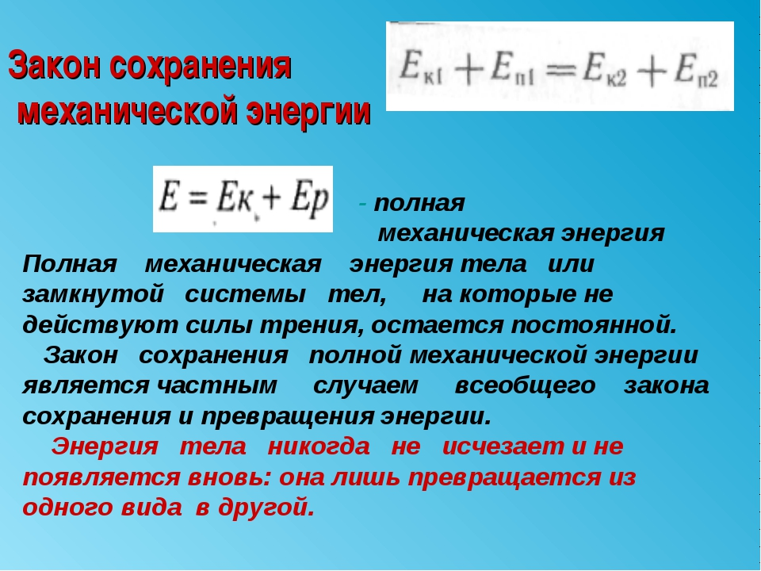Закон физики, утверждающий, что алгебраическая сумма зарядов электрически замкнутой системы сохраняется:
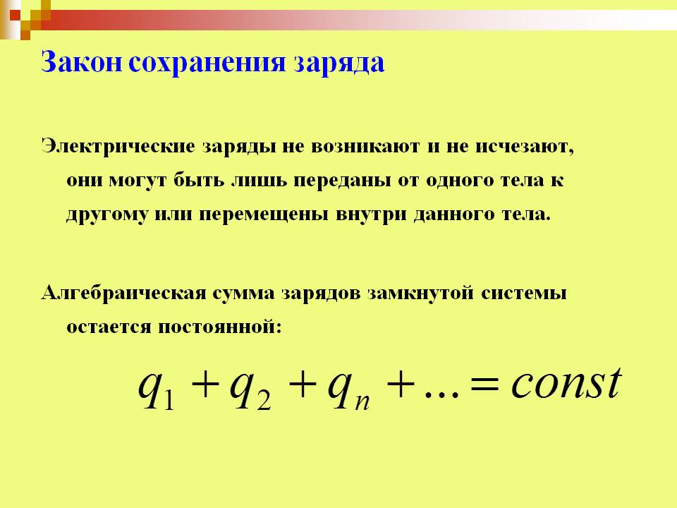Электрическое поле — одна из двух компонент электромагнитного поля, представляющая собой векторное поле[1], существующее вокруг тел или частиц, обладающих электрическим зарядом, а также возникающее при изменении магнитного поля (например, в электромагнитных волнах). Электрическое поле непосредственно невидимо, но может быть обнаружено благодаря его силовому воздействию на заряженные тела[2].
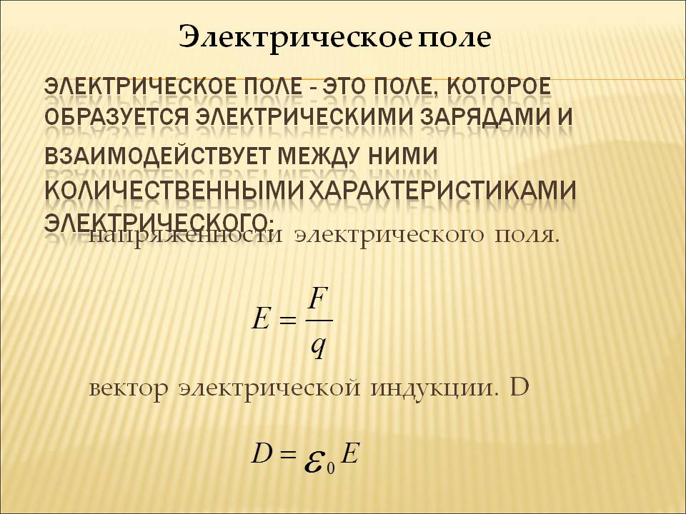Зако́н Куло́на — физический закон, описывающий силу взаимодействия между неподвижными точечными электрическими зарядами в зависимости от расстояния между ними.
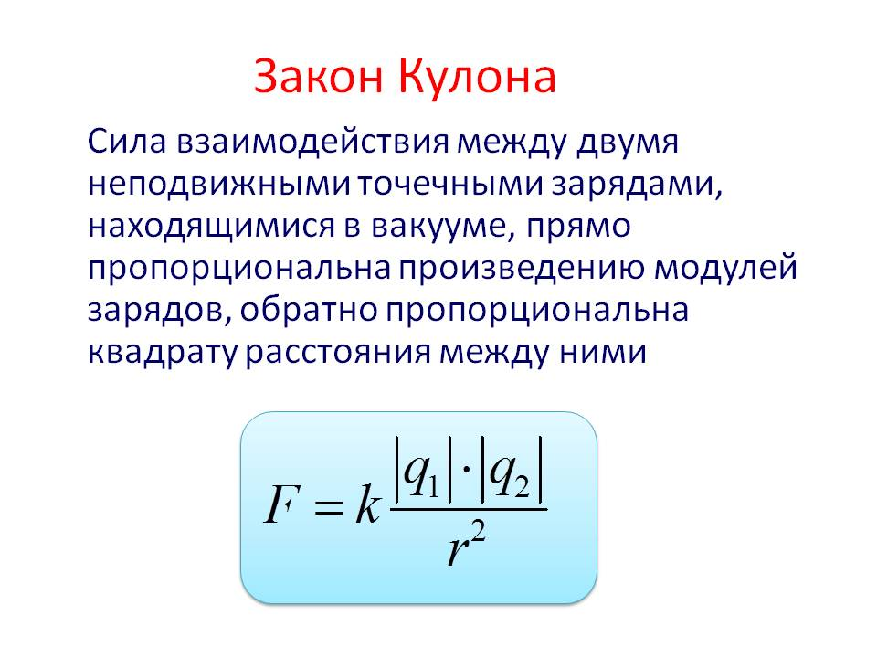Напряжённость электри́ческого по́ля — векторная физическая величина, характеризующая электрическое поле в данной точке и равная отношению силы F, действующей на неподвижный точечный заряд, помещённый в данную точку поля, к величине этого заряда q[1]:
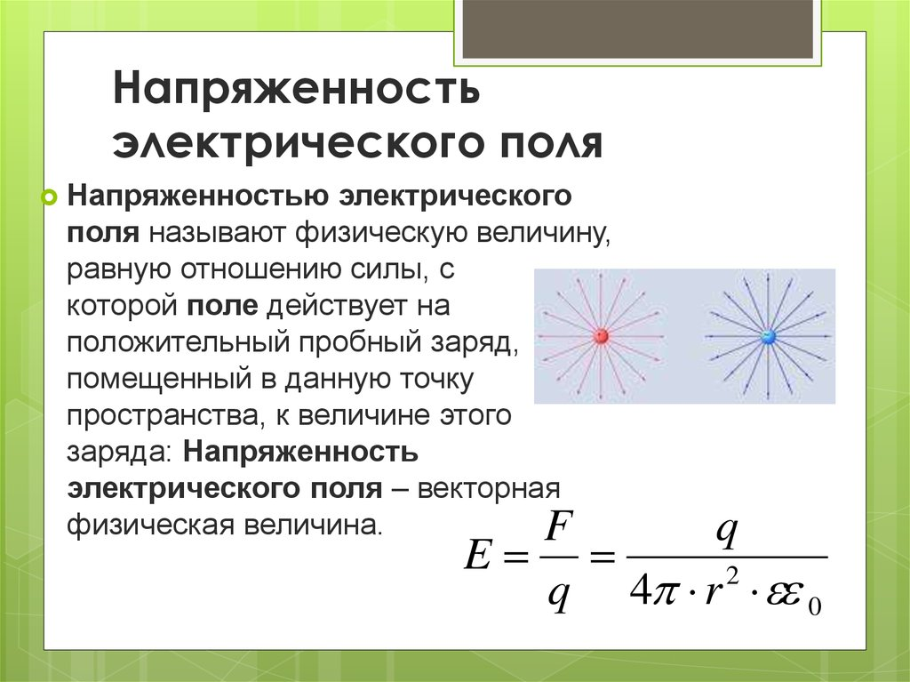напряженность электростатического поля, создаваемого в данной точке системой зарядов, есть векторная сумма напряженности полей отдельных зарядов.
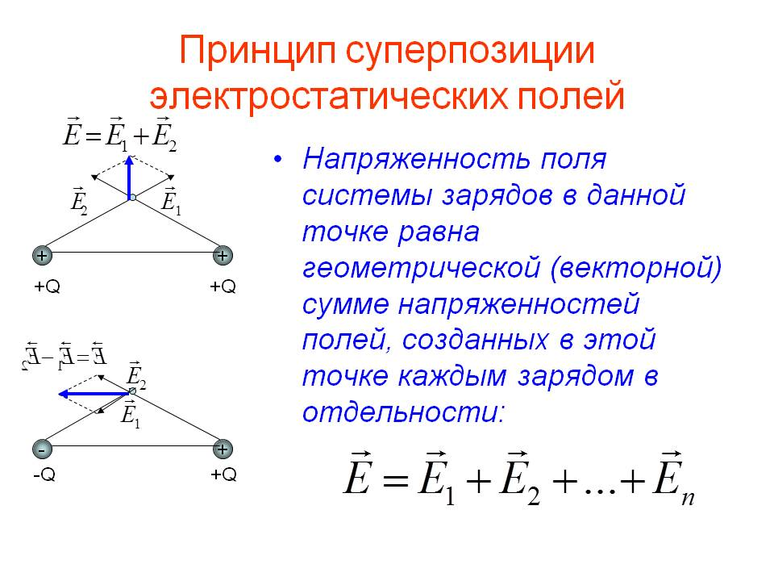Физическая величина, значение которой равно работе эффективного электрического поля (включающего сторонние поля), совершаемой при переносе единичного пробного электрического заряда из точки A в точку B
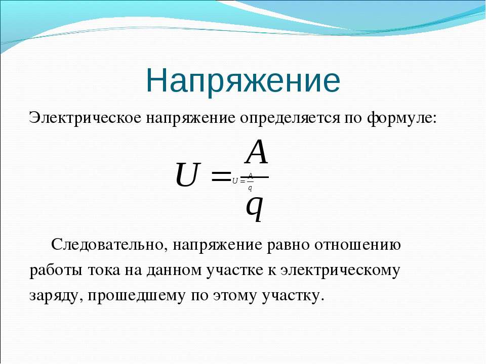Сила тока — физическая величина. , равная отношению количества заряда. , прошедшего через некоторую поверхность за некоторое время. , к величине этого промежутка времени: В качестве рассматриваемой поверхности часто используется поперечное сечение проводника.
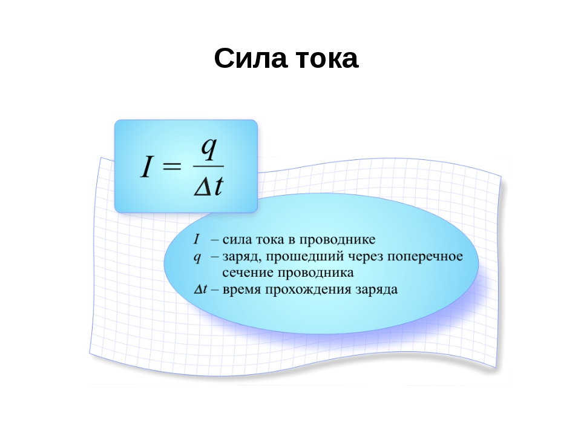Электрическое сопротивление — это физическая величина , характеризующая противодействие проводника или электрической цепи электрическому току .
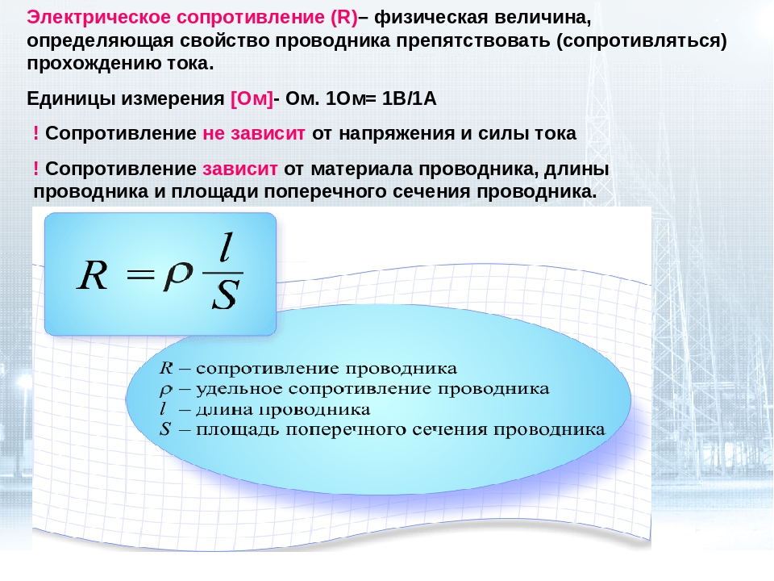Сила тока в участке цепи прямо пропорциональна напряжению на концах этого участка и обратно пропорциональна его сопротивлению
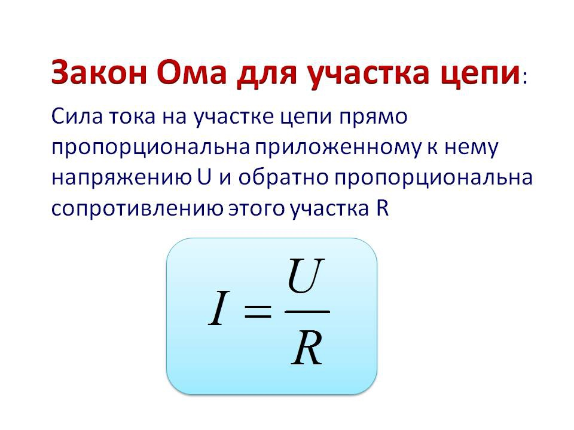Зако́н О́ма — эмпирический физический закон, определяющий связь электродвижущей силы источника (или электрического напряжения) с силой тока, протекающего в проводнике, и сопротивлением проводника
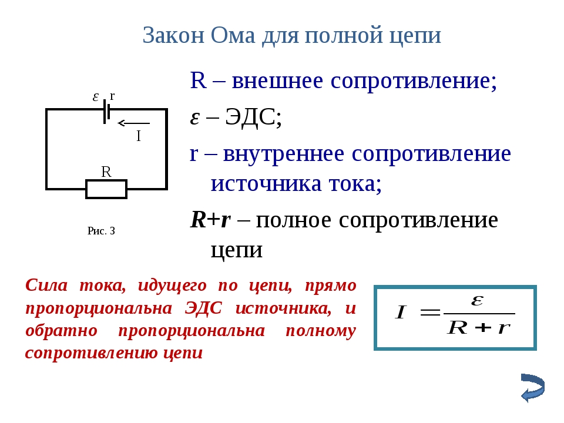